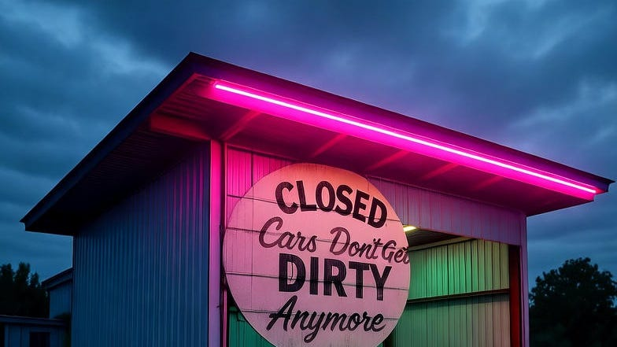
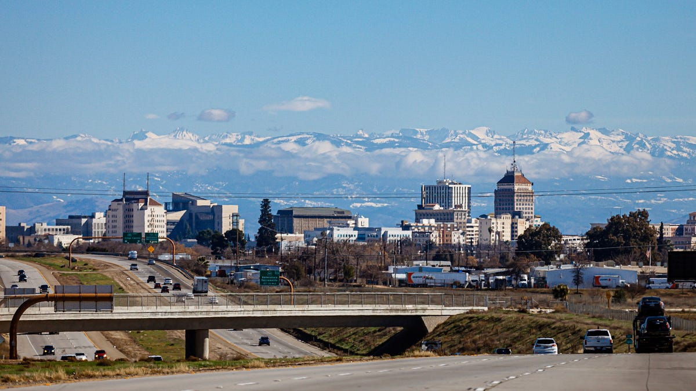

CNG
 The Natural Gas Vehicle Conversion Nobody's Talking About
The Natural Gas Vehicle Conversion Nobody's Talking AboutPart 1 · October 11, 2025 · A $5,000 retrofit could cut emissions faster than EVs — without rebuilding the grid.
- CNG Sequel: The Ultimate Geopolitical Shield
Part 2 · October 16, 2025 · Why an Emergency Conversion Isn't Just Climate Policy—It's Economic Self-Defense Against China and Future Embargoes
 The Decade of Restoration: 2025–2035
The Decade of Restoration: 2025–2035Part 4 · November 3, 2025 · Building on "The Year America Breathed Again"

The Unintended Casualties of Clean CombustionPart 5 · November 3, 2025 · A footnote to "The Decade of Restoration"

The CNG ManifestoManifesto · May 28, 2026 · The existing vehicle fleet will burn liquid fuel for two more decades regardless of any mandate; the question is which fuel, and the answer is already piped beneath California's streets.